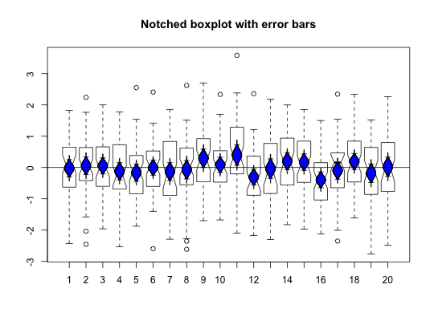
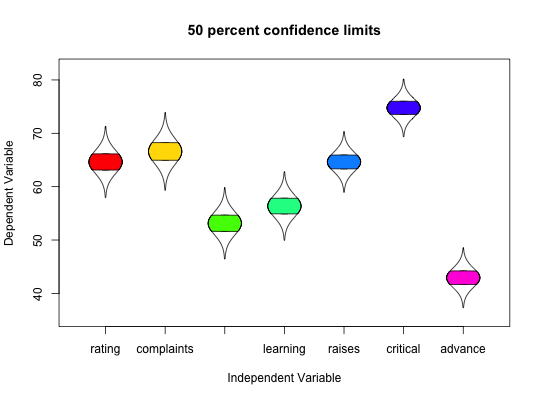
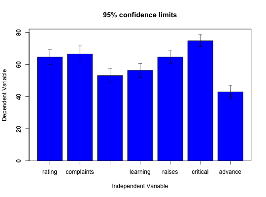
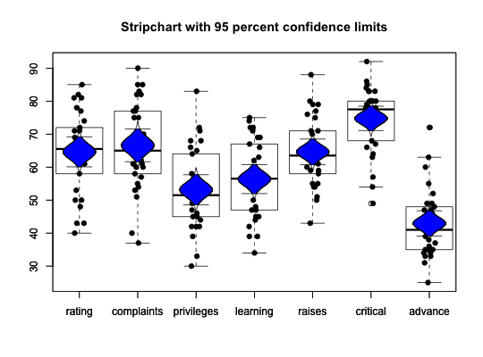
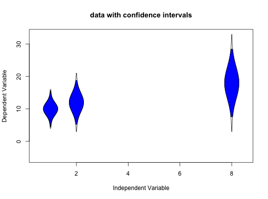
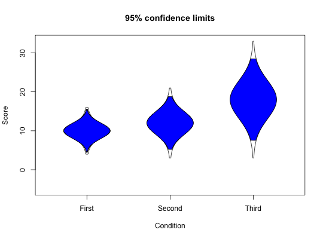
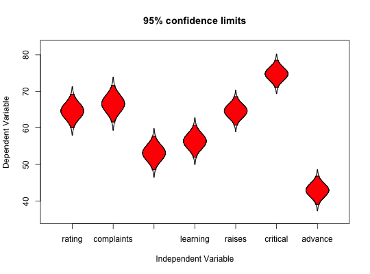
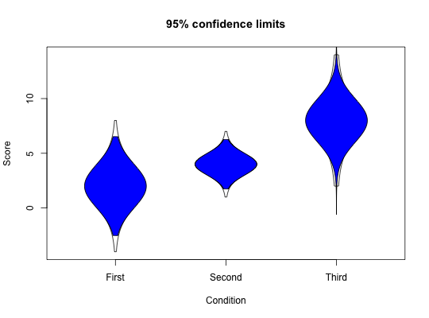
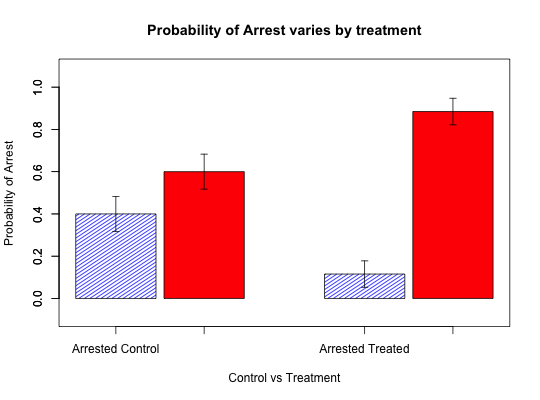
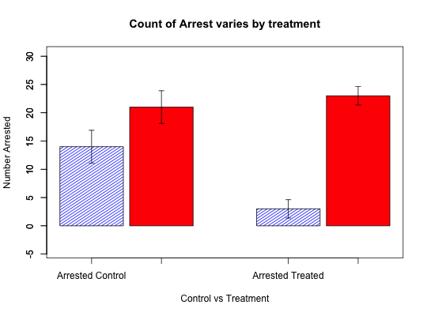

One of the many functions in R to plot means and confidence intervals. Can be done using barplots if desired. Can also be combined with such functions as boxplot to summarize distributions. Means and standard errors are calculated from the raw data using describe. Alternatively, plots of means +/- one standard deviation may be drawn.
error.bars(x,stats=NULL, ylab = "Dependent Variable",xlab="Independent Variable", main=NULL,eyes=TRUE, ylim = NULL, xlim=NULL,alpha=.05,sd=FALSE, labels = NULL, pos = NULL, arrow.len = 0.05,arrow.col="black", add = FALSE,bars=FALSE,within=FALSE, col="blue",...) error.bars.tab(t,way="columns",raw=FALSE,col=c('blue','red'),...)
| x | A data frame or matrix of raw data |
|---|---|
| t | A table of frequencies |
| stats | Alternatively, a data.frame of descriptive stats from (e.g., describe) |
| ylab | y label |
| xlab | x label |
| main | title for figure |
| ylim | if specified, the limits for the plot, otherwise based upon the data |
| xlim | if specified, the x limits for the plot, otherwise c(.5,nvar + .5) |
| eyes | should 'cats eyes' plots be drawn |
| alpha | alpha level of confidence interval -- defaults to 95% confidence interval |
| sd | if TRUE, draw one standard deviation instead of standard errors at the alpha level |
| labels | X axis label |
| pos | where to place text: below, left, above, right |
| arrow.len | How long should the top of the error bars be? |
| arrow.col | What color should the error bars be? |
| add | add=FALSE, new plot, add=TRUE, just points and error bars |
| bars | bars=TRUE will draw a bar graph if you really want to do that |
| within | should the error variance of a variable be corrected by 1-SMC? |
| col | color(s) of the catseyes. Defaults to blue. |
| way | Percentages are based upon the row totals (default) column totals, or grand total of the data Table |
| raw | If raw is FALSE, display the graphs in terms of probability, raw TRUE displays the data in terms of raw counts |
| … | other parameters to pass to the plot function, e.g., typ="b" to draw lines, lty="dashed" to draw dashed lines |
Drawing the mean +/- a confidence interval is a frequently used function when reporting experimental results. By default, the confidence interval is 1.96 standard errors of the t-distribution.
If within=TRUE, the error bars are corrected for the correlation with the other variables by reducing the variance by a factor of (1-smc). This allows for comparisons between variables.
The error bars are normally calculated from the data using the describe function. If, alternatively, a matrix of statistics is provided with column headings of values, means, and se, then those values will be used for the plot (using the stats option). If n is included in the matrix of statistics, then the distribution is drawn for a t distribution for n-1 df. If n is omitted (NULL) or is NA, then the distribution will be a normal distribution.
If sd is TRUE, then the error bars will represent one standard deviation from the mean rather than be a function of alpha and the standard errors.
See the last two examples for the case of plotting data with statistics from another function.
Alternatively, error.bars.tab will take tabulated data and convert to either row, column or overall percentages, and then plot these as percentages with the equivalent standard error (based upon sqrt(pq/N)).
Graphic output showing the means + x
These confidence regions are based upon normal theory and do not take into account any skew in the variables. More accurate confidence intervals could be found by resampling.
The error.bars.tab function will return (invisibly) the cell means and standard errors.
error.crosses for two way error bars, error.bars.by for error bars for different groups as well as error.dots
In addition, as pointed out by Jim Lemon on the R-help news group, error bars or confidence intervals may be drawn using
| function |
| package |
| bar.err |
| (agricolae) |
| plotCI |
| (gplots) |
| xYplot |
| (Hmisc) |
| dispersion |
| (plotrix) |
| plotCI |
| (plotrix) |
For advice why not to draw bar graphs with error bars, see http://biostat.mc.vanderbilt.edu/wiki/Main/DynamitePlots
x <- replicate(20,rnorm(50)) boxplot(x,notch=TRUE,main="Notched boxplot with error bars")error.bars(x,add=TRUE)abline(h=0)#show 50% confidence regions and color each variable separately error.bars(attitude,alpha=.5, main="50 percent confidence limits",col=rainbow(ncol(attitude)) )error.bars(attitude,bar=TRUE) #show the use of bar graphs#combine with a strip chart and boxplot stripchart(attitude,vertical=TRUE,method="jitter",jitter=.1,pch=19, main="Stripchart with 95 percent confidence limits")boxplot(attitude,add=TRUE)error.bars(attitude,add=TRUE,arrow.len=.2)#use statistics from somewhere else #by specifying n, we are using the t distribution for confidences #The first example allows the variables to be spaced along the x axis my.stats <- data.frame(values=c(1,2,8),mean=c(10,12,18),se=c(2,3,5),n=c(5,10,20)) error.bars(stats=my.stats,type="b",main="data with confidence intervals")#don't connect the groups my.stats <- data.frame(values=c(1,2,8),mean=c(10,12,18),se=c(2,3,5),n=c(5,10,20)) error.bars(stats=my.stats,main="data with confidence intervals")#by not specifying value, the groups are equally spaced my.stats <- data.frame(mean=c(10,12,18),se=c(2,3,5),n=c(5,10,20)) rownames(my.stats) <- c("First", "Second","Third") error.bars(stats=my.stats,xlab="Condition",ylab="Score")#Consider the case where we get stats from describe temp <- describe(attitude) error.bars(stats=temp)#show these do not differ from the other way by overlaying the two error.bars(attitude,add=TRUE,col="red")#n is omitted #the error distribution is a normal distribution my.stats <- data.frame(mean=c(2,4,8),se=c(2,1,2)) rownames(my.stats) <- c("First", "Second","Third") error.bars(stats=my.stats,xlab="Condition",ylab="Score")#n is specified #compare this with small n which shows larger confidence regions my.stats <- data.frame(mean=c(2,4,8),se=c(2,1,2),n=c(10,10,3)) rownames(my.stats) <- c("First", "Second","Third") error.bars(stats=my.stats,xlab="Condition",ylab="Score")#example of arrest rates (as percentage of condition) arrest <- data.frame(Control=c(14,21),Treated =c(3,23)) rownames(arrest) <- c("Arrested","Not Arrested") error.bars.tab(arrest,ylab="Probability of Arrest",xlab="Control vs Treatment", main="Probability of Arrest varies by treatment")#Show the raw rates error.bars.tab(arrest,raw=TRUE,ylab="Number Arrested",xlab="Control vs Treatment", main="Count of Arrest varies by treatment")